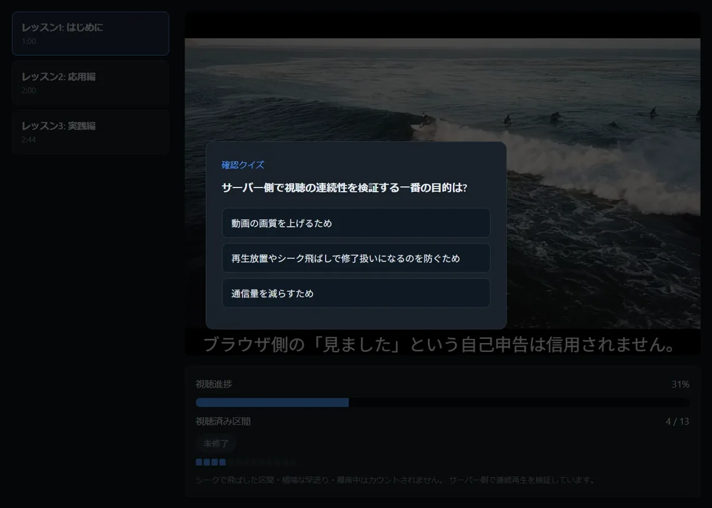
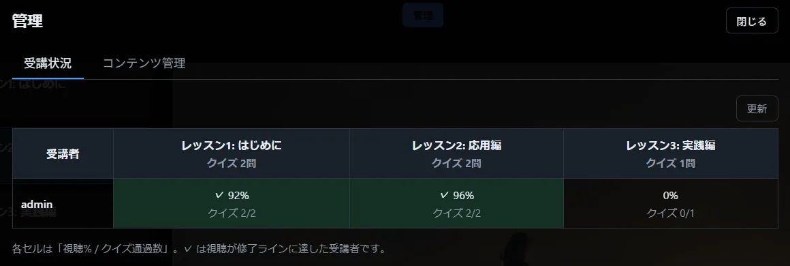
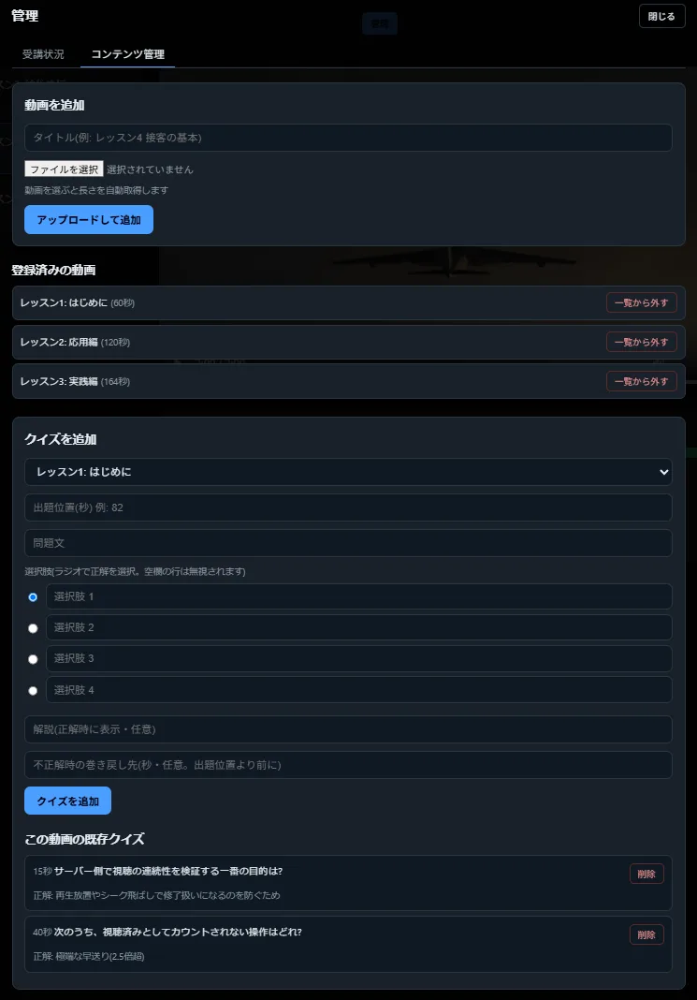

01
WEB APPLICATION / PYTHON
Educational Video Creator
動画学習の効率を上げたかった、動画学習管理システム



つくったもの
自宅PCで動かしてLAN内の端末から動画教材で学習できるプロトタイプを制作。 再生位置をサーバー側で管理し、シークによる飛ばし見や極端な倍速などを検知、実際に視聴した区間を記録します。 オリジナル教材のアップロードや字幕の追加、動画途中にクイズを挿入することが可能です。 スマホで撮った動画一本あれば、字幕とクイズ付の動画教材を作ることが出来るアプリです。
工夫したこと
- 5秒ごとのハートビートによる再生位置管理
- 視聴済み区間を基準にした修了判定
- 動画途中のクイズと不正解時の巻き戻し
- ログイン・管理者画面・コンテンツ管理
結果
スマホで撮影した動画をPCの指定フォルダに置くだけで、LAN内の端末から視聴できるところまで完成させました。 ログイン・アカウント管理、字幕ファイルの追加、GUIからのクイズ作成など、基本的な機能はすべて動作しています。
学び
教材を自分で撮影したため、自分自身の学習にはあまりつながりませんでした。 仕組みが動いても、教材の中身と使う人がそろわなければ学習効果は生まれない、ということを実感しました。 次は他の人に使ってもらい、教材側の課題も確かめたいと考えています。
View on GitHub ↗